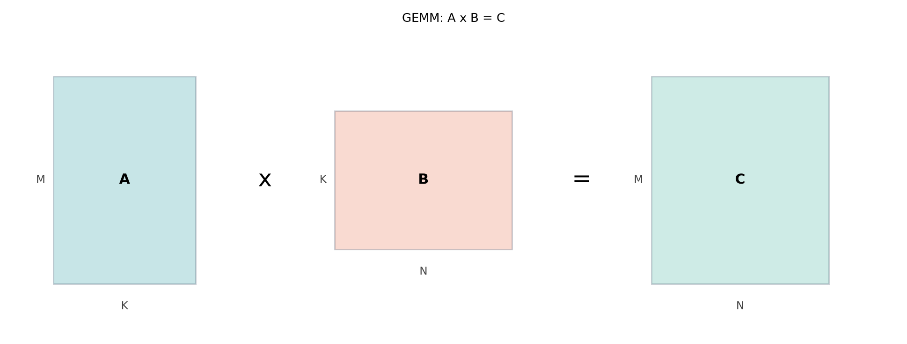

A sűrű mátrixszorzás (dense GEMM) a tudományos számítás, a gépi
tanulás és a jelfeldolgozás egyik legalapvetőbb építőköve. A
C = alpha * A * B + beta * C alakú művelet a BLAS (Basic
Linear Algebra Subprograms) szabvány szerint GEMM néven
ismert, ahol A mérete M × K, B
mérete K × N, C mérete pedig
M × N. A GPU-k ezen a területen kiválóan teljesítenek, mert
a GEMM számítási intenzitása (compute intensity) magas, és a
párhuzamosság könnyen kihasználható. Ebben az alfejezetben felépítjük a
naiv kerneltől a shared memory tilingon és a register tilingon át a
gyakorlatban használt, rendkívül optimalizált könyvtárakig: a
cuBLAS-ig és a CUTLASS-ig.

A legegyszerűbb CUDA implementációban minden szál a C
mátrix egyetlen elemét számítja ki. A szál a saját
(row, col) indexét a block- és thread-indexekből számítja,
majd egy belső ciklusban végigfut a K dimenzión, és
összegzi a szorzatokat. A tárolás sor-fő (row-major), tehát
A[row * K + k] és B[k * N + col] formában
címezzük az elemeket.
// CUDA C++ (C++17), nvcc (verzió ellenőrizendő)
// Naiv GEMM: minden szál egy kimeneti elemet számol
__global__ void naive_gemm(const float* A, const float* B, float* C,
int M, int N, int K) {
int row = blockIdx.y * blockDim.y + threadIdx.y;
int col = blockIdx.x * blockDim.x + threadIdx.x;
if (row < M && col < N) {
float sum = 0.0f;
for (int k = 0; k < K; ++k) {
sum += A[row * K + k] * B[k * N + col];
}
C[row * N + col] = sum;
}
}A kernel elindítása előtt a gridet és a blockot úgy választjuk meg,
hogy lefedjék a kimeneti mátrixot. Például
blockDim = (16, 16) esetén
gridDim = ((N + 15) / 16, (M + 15) / 16).
A naiv implementáció működik, de teljesítménye messze elmarad a
hardver lehetőségeitől. Ennek fő oka a globális memória túlzott
forgalma: minden kimeneti elem kiszámításához a szál K
darab A- és K darab B-elemet
olvas. Összesen tehát 2 * M * N * K globális olvasás
történik, miközben a számítási munka is 2 * M * N * K
lebegőpontos művelet (FLOP). A compute-to-global-memory arány tehát
pontosan 1 FLOP/elem (0,25 FLOP/bájt FP32-nél), ami rendkívül alacsony,
és a kernelt a memória sávszélessége korlátozza. A hozzáférések
koaleszkálása itt nem a gond: a B[k * N + col] olvasásnál a
warp szomszédos szálai szomszédos col értéket kapnak, tehát
folytonos, koaleszkált hozzáférést végeznek, az
A[row * K + k] pedig a warp szálai között (azonos
row-nál) broadcast. A valódi probléma az ismételt olvasás
(ugyanazt az A- és B-elemet sok szál olvassa
újra a L1/L2-ből vagy a DRAM-ból) és az alacsony aritmetikai intenzitás;
ezt Nsight Compute-ban a dram__bytes_read és az
l1tex__t_bytes metrikák összevetésével lehet
ellenőrizni.
A hatékonyság drasztikusan javítható, ha a mátrixokat kisebb
tile-okra (csempékre) bontjuk, és ezeket a gyors shared
memory-ba töltjük. A block tiling alapötlete: minden
block egy BM × BN méretű C-tile-t számol ki. A
K dimenzió mentén BK szélességű lépésekben
haladunk, minden lépésben betöltünk egy BM × BK méretű
A-tile-t és egy BK × BN méretű
B-tile-t a block shared memory-jába, majd a tile-ok
felhasználásával részszorzatokat számolunk. A K ciklus
végére a szálban felhalmozott részösszeg adja a kimeneti elemet.
A tiling előnye, hogy a globális memória olvasások száma erősen
csökken. Egy K-iteráció során
BM * BK + BK * BN elemet olvasunk globálisan, miközben
2 * BM * BN * BK FLOP-ot végzünk. A
compute-to-global-memory arány így:
ami független BK-tól, és BM illetve
BN növelésével növekszik. Ha például
BM = BN = 16, az arány
FLOP/elem, tehát 16-szor nagyobb, mint a naiv kernelnél (1 FLOP/elem).
Ennyivel kevesebb globális (L1/L2/DRAM) olvasási kérés jut egy FLOP-ra;
a tényleges gyorsulás ennél kisebb, mert a naiv kernel olvasásainak nagy
részét a cache szolgálja ki – ezt a labor méri.
A következő kernel egy 16×16-os blockkal, 16×16-os shared memory
tile-okkal dolgozik. A block dimenziója (16, 16), így a 256
szál pontosan lefedi mindkét tile-t.
// CUDA C++ (C++17), nvcc (verzió ellenőrizendő)
// Tiled GEMM: shared memory + block tiling, sor-fő tárolás
#define BM 16
#define BN 16
#define BK 16
__global__ void tiled_gemm_naive(const float* A, const float* B, float* C,
int M, int N, int K) {
__shared__ float As[BM][BK];
__shared__ float Bs[BK][BN];
int bx = blockIdx.x;
int by = blockIdx.y;
int tx = threadIdx.x; // 0..BN-1
int ty = threadIdx.y; // 0..BM-1
// A C-tile elemének globális koordinátája
int row = by * BM + ty;
int col = bx * BN + tx;
float sum = 0.0f;
// A K dimenzió bejárása BK méretű lépésekkel
for (int k0 = 0; k0 < K; k0 += BK) {
// Betöltés shared memory-ba
// Feltételezzük, hogy a tile-ok nem lógnak túl a mátrix határain
As[ty][tx] = A[(by * BM + ty) * K + (k0 + tx)];
Bs[ty][tx] = B[(k0 + ty) * N + (bx * BN + tx)];
__syncthreads(); // biztosítjuk, hogy minden szál betöltött
// Részszorzat számítása a shared memory-ból
for (int k = 0; k < BK; ++k) {
sum += As[ty][k] * Bs[k][tx];
}
__syncthreads(); // megvárjuk, amíg minden szál befejezi az olvasást
// a következő iteráció felülírása előtt
}
C[row * N + col] = sum;
}Az alábbi ábra a kernel k0 ciklusát követi egy kiemelt
blokkra és szálra, alul pedig a következő szakasz 2×2-es
regiszter-tile-jának egy k-lépését mutatja.
A fenti kernelben a shared memory hozzáférések bank-konfliktus
szempontjából meglehetősen kedvezőek. A BK = 16 választás
miatt a As[ty][k] hozzáférésnél a warp két különböző
ty értéke két különböző, 16 banknyi távolságra lévő címet
eredményez, így nincs ütközés. A Bs[k][tx] hozzáférésnél a
tx folytonos, ami szintén multicast, nem conflict. Bank
conflict nem a tile szélességétől, hanem a hozzáférési lépésköztől függ:
ha egy warp szálai egy sorhossznyi (32 szó vagy többszöröse) lépéssel
haladnak, ugyanazon bank különböző szavait érik el. Ebben a kernelben ez
nem fordul elő; a 19.1.3 vázlatában igen, ott a padding
(As[BM][BK + 1]) a megoldás. A padding általános tárgyalása
a 11.2. alfejezetben található.
A kernel fejlesztésekor ügyelni kell arra, hogy a mátrixdimenziók oszthatók legyenek a tile méretekkel, vagy kezelni kell a határokat. A laborban a teljes mátrixméretet a tile-ok többszörösére választjuk.
A shared memory tiling már jelentős javulást hoz, de a modern GPU-kon
a ténylegesen nagy teljesítményhez register tilingre
van szükség. Ebben a technikában minden szál nem egyetlen
C-elemet, hanem egy kis regiszter-tile-t
(például TM × TN) számol. Így minden szál a belső ciklusban
több részösszeget tart nyilván regiszterekben, és a shared memory-ból
való olvasások száma tovább csökken. A regiszterekhez való hozzáférés
sokkal gyorsabb, mint a shared memory elérése, és a több független
részösszeg lehetővé teszi az utasítás-szintű párhuzamosság (ILP)
kihasználását, ami elrejti a memória-késleltetést.
A register tiling gondolata: minden szál a C-tile egy
TM × TN méretű al-tile-jáért felel. A számítás során
először betölti a megfelelő A- és B-szeleteket
regiszterekbe, majd egy szorzat-összegző ciklusban frissíti a
részösszegeket. Ezt a módszert alkalmazzák a GPU-gyártók által
szállított GEMM könyvtárak (például a cuBLAS) és a
CUTLASS is.
Egy egyszerű, 2×2-es regiszter-tile-t használó kernel vázlatát
mutatjuk be (nem fordított, nem futtatott kód). A blokk
BM × BN = 16 × 16 méretű C-tile-t számol,
minden szál TM × TN = 2 × 2 elemet, így a blokk mérete
(BN/TN, BM/TM) = (8, 8), azaz 64 szál; a 16×16-os
As/Bs tile-okat a 64 szál együtt, ciklusban
tölti be. A belső ciklus lényege a regiszter-fragmentek
(a_frag, b_frag) egyszeri betöltése és
újrafelhasználása: 4 FMA-hoz 2 + 2 = 4 shared memory olvasás kell,
szemben a fragmentek nélküli 8-cal.
// CUDA C++ (C++17), nvcc 12.x; sor-fő tárolás; M, N, K a BM, BN, BK többszöröse
// Register tiling vázlat: minden szál 2x2-es C-tile-t számol
#define BM 16
#define BN 16
#define BK 16
#define TM 2
#define TN 2
// Indítás: dim3 block(BN / TN, BM / TM); dim3 grid(N / BN, M / BM);
__global__ void register_tiled_gemm(const float* A, const float* B, float* C,
int M, int N, int K) {
__shared__ float As[BM][BK];
__shared__ float Bs[BK][BN];
const int tx = threadIdx.x; // 0..BN/TN-1
const int ty = threadIdx.y; // 0..BM/TM-1
const int tid = ty * blockDim.x + tx;
const int nthreads = blockDim.x * blockDim.y; // 64
const int rowBase = blockIdx.y * BM;
const int colBase = blockIdx.x * BN;
float c[TM][TN] = {}; // regiszter-akkumulátorok
float a_frag[TM], b_frag[TN]; // regiszter-fragmentek
for (int k0 = 0; k0 < K; k0 += BK) {
// Együttes betöltés: a 64 szál bejárja a 16x16-os tile-okat
for (int idx = tid; idx < BM * BK; idx += nthreads) {
int r = idx / BK, kk = idx % BK;
As[r][kk] = A[(rowBase + r) * K + (k0 + kk)];
}
for (int idx = tid; idx < BK * BN; idx += nthreads) {
int kk = idx / BN, cc = idx % BN;
Bs[kk][cc] = B[(k0 + kk) * N + (colBase + cc)];
}
__syncthreads();
for (int k = 0; k < BK; ++k) {
for (int i = 0; i < TM; ++i) a_frag[i] = As[ty * TM + i][k];
for (int j = 0; j < TN; ++j) b_frag[j] = Bs[k][tx * TN + j];
for (int i = 0; i < TM; ++i)
for (int j = 0; j < TN; ++j)
c[i][j] += a_frag[i] * b_frag[j];
}
__syncthreads();
}
for (int i = 0; i < TM; ++i)
for (int j = 0; j < TN; ++j)
C[(rowBase + ty * TM + i) * N + (colBase + tx * TN + j)] = c[i][j];
}A vázlat As[ty * TM + i][k] olvasása 4-utas bankütközést
okoz (a címek (2·ty + i)·16 + k alakúak, egy warp négy
ty sora 32 szónyira van egymástól); az
As[BM][BK + 1] padding ezt megszünteti (kézi levezetés, nem
futtatott), ami Nsight Compute-ban a
l1tex__data_bank_conflicts_pipe_lsu_mem_shared_op_ld
metrikával ellenőrizhető (a metrikanév ellenőrzendő a telepített
verzióban).
A gyakorlati projektekben ritkán érdemes saját GEMM kernelt írni, mert a cuBLAS könyvtár rendkívül optimalizált, az adott GPU-architektúrára hangolt implementációkat tartalmaz, beleértve a tensor core-okat és a mixed precision módokat is. A cuBLAS a BLAS szabványt követi, de column-major (Fortran) tárolást használ, ami eltér a C/C++-ban megszokott sor-fő tárolástól. Ez a leggyakoribb hibaforrás.
A cublasSgemm szignatúrája:
cublasStatus_t cublasSgemm(cublasHandle_t handle,
cublasOperation_t transa, cublasOperation_t transb,
int m, int n, int k,
const float *alpha,
const float *A, int lda,
const float *B, int ldb,
const float *beta,
float *C, int ldc);transa = transb = CUBLAS_OP_N esetén a művelet
C = alpha * A * B + beta * C, ahol (column-major nézetben)
A mérete m × k, B mérete
k × n, C mérete m × n; a leading
dimension az oszlop hossza: lda = m, ldb = k,
ldc = m.
1. eset: column-major tárolás (a labor ezt
használja). A logikai A (M×K), B (K×N),
C (M×N) mátrixokra:
// A (MxK): lda = M; B (KxN): ldb = K; C (MxN): ldc = M
cublasSgemm(handle, CUBLAS_OP_N, CUBLAS_OP_N,
M, N, K,
&alpha, d_A, M, d_B, K, &beta, d_C, M);2. eset: sor-fő tárolás (C/C++ szokás). Egy sor-fő
M×N mátrix memóriaképe megegyezik a column-major
N×M transzponáltjáéval. A C = A * B sor-fő
szorzat tehát a column-major nézetben a C^T = B^T * A^T
szorzatnak felel meg, ezért az operandusokat felcseréljük, és nincs
szükség transzponálásra:
// Sor-fő A (MxK), B (KxN), C (MxN):
// column-major nézetben B^T (NxK), A^T (KxM), C^T (NxM): m = N, n = M, k = K
// ldb = N (B sor-fő sorhossza), lda = K (A sor-fő sorhossza), ldc = N (C sor-fő sorhossza)
cublasSgemm(handle, CUBLAS_OP_N, CUBLAS_OP_N,
N, M, K,
&alpha, d_B, N, d_A, K, &beta, d_C, N);Az alábbi ábra a kis példán mutatja, hogy ugyanaz a lineáris tömb sor-fő és column-major nézetben a mátrix, illetve a transzponáltja, és hogy ebből miért következik az operanduscsere és a vezető dimenziók választása.
Szándékosan hibás példa (ne használd). A
leggyakoribb tévedés, hogy sor-fő adatokkal a column-major hívást
másoljuk le (M, N, K, d_A, M, d_B, K, d_C, M): a
lda = M nem egyezik az A sor-fő sorhosszával
(K), ezért a hívás rossz elemeket olvas. A hívás a
tömbhatárokon belül marad, és CUBLAS_STATUS_SUCCESS-szel
tér vissza, ezért sem a státusz, sem a compute-sanitizer nem jelez
hibát: csendben rossz eredményt kapunk. A hibát kis példán
(M=2, K=3, N=4) CPU-referenciával lehet leleplezni; a
helyes receptek fent a két esetre.
A CUTLASS (CUDA Templates for Linear Algebra Subroutines) egy nyílt forráskódú C++ template könyvtár, amely a GEMM és más lineáris algebrai műveletek hatékony implementálásához biztosít építőelemeket. A CUTLASS segítségével a fejlesztő explicit módon megadhatja a tiling stratégiát (threadblock tile, warp tile, instruction-level tile), az adattípusokat, a számítási pontosságot, és a hardveres gyorsítókat (például tensor core-ok). A cuBLAS belső megvalósítása zárt; hogy milyen technikákat használ, azt itt nem állítjuk.
Egy minimális CUTLASS-hívás az alapértelmezett konfigurációval (nem
fordított, nem futtatott vázlat; a pontos API és a verzió ellenőrizendő
a CUTLASS dokumentációjában, a CUTLASS 2.x stílusú
device::Gemm felület alapján):
// C++17, CUTLASS 2.x/3.x kompatibilis device::Gemm (verzió ellenőrizendő)
#include <cutlass/gemm/device/gemm.h>
using Gemm = cutlass::gemm::device::Gemm<
float, cutlass::layout::ColumnMajor, // A
float, cutlass::layout::ColumnMajor, // B
float, cutlass::layout::ColumnMajor>; // C
cutlass::Status run_cutlass_gemm(int M, int N, int K, float alpha,
const float* d_A, int lda,
const float* d_B, int ldb, float beta,
float* d_C, int ldc) {
Gemm gemm_op;
Gemm::Arguments args({M, N, K},
{d_A, lda}, {d_B, ldb},
{d_C, ldc}, {d_C, ldc}, // C bemenet és D kimenet
{alpha, beta});
return gemm_op(args); // a státuszt ellenőrizni kell
}A threadblock- és warp-tile méreteket a sablon további paraméterei
adják (alapértelmezésük architektúra- és típusfüggő, a CUTLASS
default_gemm_configuration.h fájljában ellenőrizendő); a
fenti példa ezeket nem állítja. A tensor core-ok (TF32/FP16/BF16)
használata a cublasGemmEx/cublasLt hívásokkal
vagy megfelelő CUTLASS-konfigurációval lehetséges; ezt, valamint a
teljesítménymérést (FLOP/s a GPU csúcsához viszonyítva) a könyv későbbi
fejezete (23.1–23.4) tárgyalja.
Column-major vs. row-major keverés. A cuBLAS
column-major tárolást vár, míg a legtöbb házilag írt CUDA kernel sor-főt
feltételez. Ha a mátrixokat nem megfelelően adjuk át, a művelet a
transzponált mátrixok szorzatát számítja ki, vagy akár memóriahibához
vezet. Megoldás: mindig rögzítsük a tárolási formátumot, és a hívásnál
használjuk a megfelelő transa/transb opciókat
vagy lda/ldb értékeket.
Nem megfelelő tile méret. Ha a tile túl nagy, a
shared memory kihasználtsága csökkenti az occupancyt, mert kevesebb
block fér el egy SM-en. Ha túl kicsi, a globális memória forgalom
csökkentése elmarad. A tapasztalat szerint a BM = BN = 16
vagy 32 jó kiindulópont, de az optimális érték
architektúrafüggő, ezért mindig mérni kell.
Hiányzó __syncthreads(). A shared
memory-ba való betöltés után minden szálnak várnia kell, mielőtt a tile
elemeit olvasná. Hasonlóképpen a számítás után szinkronizálni kell,
mielőtt a következő iteráció felülírná a tile-t. A hiányzó
szinkronizáció versenyhelyzethez és helytelen eredményhez
vezet.
Határok kezelése. Ha a mátrixdimenziók nem oszthatók a tile méretekkel, a kernelnek ellenőriznie kell a globális indexeket, és a betöltésnél is figyelni kell arra, hogy ne lépjen túl a mátrix határain. A laborban ezért olyan dimenziókat választunk, amelyek a tile méretek többszörösei.
Bank conflict a shared memory-ban. Ütközés akkor
lép fel, ha egy warp szálai ugyanazon bank különböző szavait olvassák,
például ha a szálak egy sorhossznyi (32 szó vagy annak többszöröse)
lépéssel haladnak. A 19.1.2 kernelében ez nem fordul elő, a 19.1.3
vázlatában igen: az As[ty * TM + i][k] olvasás 4-utas
ütközést okoz, amelyet az __shared__ float As[BM][BK + 1];
padding megszüntet.
Elmaradt hibakezelés. A CUDA API-hívások után
mindig ellenőrizni kell a cudaGetLastError() vagy a saját
CUDA_CHECK makró visszatérési értékét, különösen a
kernelindítás után.
A labor célja, hogy a hallgató saját kezűleg valósítson meg egy naiv és egy tiled GEMM kernelt, és mérje a teljesítményüket a cuBLAS-hoz képest. Az alábbi protokoll követendő.
Követelmények: - CUDA C++ kód (C++17),
nvcc fordító (a mérési naplóban rögzítve: verzió, GPU,
compute capability). - A mátrixok FP32 típusúak,
M = N = K = 1024 (a tile méretek többszöröse). - A tárolás
column-major, hogy a cuBLAS hívás natív legyen (a
sor-fő eset receptje fent, a 19.4 sor-fő labort használ). - A saját
kernelek is column-major indexelést használjanak, hogy az
összehasonlítás igazságos legyen. - Minden API-hívás és kernelindítás
után hibaellenőrzés (CUDA_CHECK,
cudaGetLastError).
A megvalósítandó kernelek: 1.
naive_gemm_colmajor – minden szál egy kimeneti elemet
számol, nincs tiling. 2. tiled_gemm_colmajor – shared
memory tiling, BM=16, BN=16, BK=16, blockdim
(16,16). 3. cuBLAS cublasSgemm hívás
(column-major recept, lásd fent).
Mérési protokoll: - Rögzítse a környezetet: GPU
modell, driver verzió, CUDA verzió, OS, compute capability. - Végezzen
legalább 5 warm-up futtatást minden kernelből. - Minden kernelt
futtasson legalább 20 alkalommal, mérje a futásidőt
cudaEvent segítségével. - A mérési naplóban adja meg a
medián futásidőt és a szórást (vagy az IQR-t). - Számítsa ki az elért
számítási teljesítményt:
(
ms-ban), és adja meg a cuBLAS-hoz viszonyított százalékát (a GEMM-nél a
FLOP/s és az arány informatív, a puszta sávszélesség nem). - Ellenőrizze
az eredményt: kis példán (M=2, K=3, N=4, a
check_small() függvény, várt C sor-főben: 38 44 50 56 / 83
98 113 128) CPU-referenciával, nagy méretnél a cuBLAS eredményéhez
viszonyított legnagyobb relatív eltéréssel. - A várható sorrend (naiv
lassabb, tiled gyorsabb, cuBLAS a leggyorsabb) hipotézis; a mért
értékeket külön tüntesse fel, és csak azokat jelölje ellenőrzöttként,
amelyeket valóban lefuttatott.
A mérési naplóhoz egy sablon:
| Kernel | Medián idő (ms) | Szórás (ms) | Elért GFLOP/s | cuBLAS-hoz viszonyítva (%) | Megjegyzés |
|---|---|---|---|---|---|
| Naiv | <mért – kitöltendő> | <mért – kitöltendő> | <számolt> | <számolt> | |
| Tiled | <mért – kitöltendő> | <mért – kitöltendő> | <számolt> | <számolt> | |
| cuBLAS | <mért – kitöltendő> | <mért – kitöltendő> | <számolt> | 100 |
A laborban nem adunk előre konkrét mért értékeket, mert azok hardverfüggőek; a hallgatónak saját környezetben kell mérnie. Az alábbi kód a labor kiinduló mérőprogramja (nem fordított, nem futtatott vázlat).
Kiinduló kód (column-major kernelek, cuBLAS-hívás, mérés):
// CUDA C++ (C++17), nvcc 12.x; build: nvcc -std=c++17 -O3 -Xcompiler -Wall,-Wextra
// -arch=sm_80 gemm_lab.cu -lcublas -o gemm_lab
#include <cstdio>
#include <cstdlib>
#include <cmath>
#include <vector>
#include <algorithm>
#include <cublas_v2.h>
// a könyv kanonikus hibamakrói (1.2)
#define CUDA_CHECK(call) do { cudaError_t e = (call); if (e != cudaSuccess) { \
fprintf(stderr, "CUDA hiba %s:%d: %s\n", __FILE__, __LINE__, cudaGetErrorString(e)); \
exit(EXIT_FAILURE); } } while (0)
#define CUBLAS_CHECK(call) do { cublasStatus_t s_ = (call); \
if (s_ != CUBLAS_STATUS_SUCCESS) { \
fprintf(stderr, "cuBLAS hiba %s:%d: %d\n", __FILE__, __LINE__, (int)s_); \
exit(EXIT_FAILURE); } } while (0)
#define BM 16
#define BN 16
#define BK 16
// Column-major: A[row + k*M], B[k + col*K], C[row + col*M]; a warp szálai (tx) a sorokon
// haladnak -> koaleszkált
__global__ void naive_gemm_colmajor(const float* A, const float* B, float* C, int M, int N,
int K) {
int row = blockIdx.x * blockDim.x + threadIdx.x;
int col = blockIdx.y * blockDim.y + threadIdx.y;
if (row < M && col < N) {
float sum = 0.0f;
for (int k = 0; k < K; ++k) sum += A[row + (size_t)k * M] * B[k + (size_t)col * K];
C[row + (size_t)col * M] = sum;
}
}
// blockDim = (BM, BN); grid = (ceil(M/BM), ceil(N/BN))
__global__ void tiled_gemm_colmajor(const float* A, const float* B, float* C, int M, int N,
int K) {
__shared__ float As[BK][BM]; // As[k][r]
__shared__ float Bs[BN][BK]; // Bs[c][k]
const int tx = threadIdx.x, ty = threadIdx.y;
const int row = blockIdx.x * BM + tx;
const int col = blockIdx.y * BN + ty;
float sum = 0.0f;
for (int k0 = 0; k0 < K; k0 += BK) {
// A: a (k0+ty). oszlop, tx. sor -> folytonos tx szerint
As[ty][tx] = (row < M && k0 + ty < K) ? A[row + (size_t)(k0 + ty) * M] : 0.0f;
// B: a col. oszlop (blokkon belül ty), (k0+tx). elem -> folytonos tx szerint
int bcol = blockIdx.y * BN + ty;
Bs[ty][tx] = (bcol < N && k0 + tx < K) ? B[(k0 + tx) + (size_t)bcol * K] : 0.0f;
__syncthreads();
for (int k = 0; k < BK; ++k) sum += As[k][tx] * Bs[ty][k];
__syncthreads();
}
if (row < M && col < N) C[row + (size_t)col * M] = sum;
}
// Kis példa (M=2, K=3, N=4): a column-major leképezést a cuBLAS-tól független CPU-referencia
// ellenőrzi.
// A = [[1,2,3],[4,5,6]], B = 1..12 sor-fő; várt C (sor-főben): 38 44 50 56 / 83 98 113 128
static bool check_small(cublasHandle_t h) {
const int M = 2, K = 3, N = 4;
const float alpha = 1.0f, beta = 0.0f;
std::vector<float> A(M * K), B(K * N), expected(M * N, 0.0f), out(M * N);
for (int i = 0; i < M; ++i)
for (int j = 0; j < K; ++j) A[i + j * M] = (float)(i * K + j + 1);
for (int i = 0; i < K; ++i)
for (int j = 0; j < N; ++j) B[i + j * K] = (float)(i * N + j + 1);
for (int i = 0; i < M; ++i) for (int j = 0; j < N; ++j) for (int k = 0; k < K; ++k)
expected[i + j * M] += A[i + k * M] * B[k + j * K];
float *dA, *dB, *dC;
CUDA_CHECK(cudaMalloc(&dA, A.size() * sizeof(float)));
CUDA_CHECK(cudaMalloc(&dB, B.size() * sizeof(float)));
CUDA_CHECK(cudaMalloc(&dC, out.size() * sizeof(float)));
CUDA_CHECK(cudaMemcpy(dA, A.data(), A.size() * sizeof(float), cudaMemcpyHostToDevice));
CUDA_CHECK(cudaMemcpy(dB, B.data(), B.size() * sizeof(float), cudaMemcpyHostToDevice));
dim3 block(BM, BN), grid((M + BM - 1) / BM, (N + BN - 1) / BN);
bool ok = true;
auto verify = [&](const char* name) {
CUDA_CHECK(cudaMemcpy(out.data(), dC, out.size() * sizeof(float),
cudaMemcpyDeviceToHost));
bool good = true;
for (size_t i = 0; i < out.size(); ++i)
if (std::fabs(out[i] - expected[i]) > 1e-5f) good = false;
std::printf("kis példa, %-7s: %s\n", name, good ? "egyezik" : "ELTÉR");
ok = ok && good;
};
naive_gemm_colmajor<<<grid, block>>>(dA, dB, dC, M, N, K);
CUDA_CHECK(cudaGetLastError()); CUDA_CHECK(cudaDeviceSynchronize()); verify("naiv");
tiled_gemm_colmajor<<<grid, block>>>(dA, dB, dC, M, N, K);
CUDA_CHECK(cudaGetLastError()); CUDA_CHECK(cudaDeviceSynchronize()); verify("tiled");
CUBLAS_CHECK(cublasSgemm(h, CUBLAS_OP_N, CUBLAS_OP_N, M, N, K, &alpha, dA, M, dB, K,
&beta, dC, M));
CUDA_CHECK(cudaDeviceSynchronize()); verify("cuBLAS");
CUDA_CHECK(cudaFree(dA)); CUDA_CHECK(cudaFree(dB)); CUDA_CHECK(cudaFree(dC));
return ok;
}
// Időmérés: 5 warm-up + reps mért futás, ismétlésenként saját eseménypár; medián és
// mintaszórás ms-ban
template <typename F>
static void time_ms(F launch, int reps, double& med, double& sd) {
cudaEvent_t t0, t1;
CUDA_CHECK(cudaEventCreate(&t0)); CUDA_CHECK(cudaEventCreate(&t1));
for (int w = 0; w < 5; ++w) launch(); // warm-up
CUDA_CHECK(cudaDeviceSynchronize());
std::vector<float> t(reps);
for (int r = 0; r < reps; ++r) {
CUDA_CHECK(cudaEventRecord(t0)); launch(); CUDA_CHECK(cudaEventRecord(t1));
CUDA_CHECK(cudaEventSynchronize(t1));
CUDA_CHECK(cudaEventElapsedTime(&t[r], t0, t1));
}
double mean = 0.0, ss = 0.0; // szórás két menetben
for (float x : t) mean += x;
mean /= reps;
for (float x : t) ss += (x - mean) * (x - mean);
sd = std::sqrt(ss / (reps - 1));
std::sort(t.begin(), t.end());
med = 0.5 * (t[reps / 2 - 1] + t[reps / 2]); // reps páros
CUDA_CHECK(cudaEventDestroy(t0)); CUDA_CHECK(cudaEventDestroy(t1));
}
int main() {
const int M = 1024, N = 1024, K = 1024, REPS = 20;
const float alpha = 1.0f, beta = 0.0f;
std::vector<float> hA((size_t)M * K), hB((size_t)K * N), hC((size_t)M * N),
hRef((size_t)M * N);
srand(12345);
for (auto& x : hA) x = (float)rand() / RAND_MAX;
for (auto& x : hB) x = (float)rand() / RAND_MAX;
float *dA, *dB, *dC, *dRef;
CUDA_CHECK(cudaMalloc(&dA, hA.size() * sizeof(float)));
CUDA_CHECK(cudaMalloc(&dB, hB.size() * sizeof(float)));
CUDA_CHECK(cudaMalloc(&dC, hC.size() * sizeof(float)));
CUDA_CHECK(cudaMalloc(&dRef, hRef.size() * sizeof(float)));
CUDA_CHECK(cudaMemcpy(dA, hA.data(), hA.size() * sizeof(float), cudaMemcpyHostToDevice));
CUDA_CHECK(cudaMemcpy(dB, hB.data(), hB.size() * sizeof(float), cudaMemcpyHostToDevice));
cublasHandle_t h; CUBLAS_CHECK(cublasCreate(&h));
if (!check_small(h)) { std::fprintf(stderr,
"a kis példa ellenőrzése sikertelen\n"); return 1; }
auto run_cublas = [&] {
CUBLAS_CHECK(cublasSgemm(h, CUBLAS_OP_N, CUBLAS_OP_N, M, N, K, &alpha, dA, M, dB, K,
&beta, dRef, M));
};
dim3 block(BM, BN), grid((M + BM - 1) / BM, (N + BN - 1) / BN);
auto run_naive = [&] { naive_gemm_colmajor<<<grid, block>>>(dA, dB, dC, M, N,
K); CUDA_CHECK(cudaGetLastError()); };
auto run_tiled = [&] { tiled_gemm_colmajor<<<grid, block>>>(dA, dB, dC, M, N,
K); CUDA_CHECK(cudaGetLastError()); };
run_cublas(); CUDA_CHECK(cudaDeviceSynchronize());
CUDA_CHECK(cudaMemcpy(hRef.data(), dRef, hRef.size() * sizeof(float),
cudaMemcpyDeviceToHost));
struct Case { const char* name; int id; } cases[] = {{"naiv", 0}, {"tiled", 1}, {"cuBLAS",
2}};
for (auto& c : cases) {
double med, sd;
if (c.id == 0) time_ms(run_naive, REPS, med, sd);
else if (c.id == 1) time_ms(run_tiled, REPS, med, sd);
else time_ms(run_cublas, REPS, med, sd);
double gflops = 2.0 * M * N * K / (med * 1e6);
double maxrel = 0.0;
if (c.id != 2) {
CUDA_CHECK(cudaMemcpy(hC.data(), dC, hC.size() * sizeof(float),
cudaMemcpyDeviceToHost));
for (size_t i = 0; i < hC.size(); ++i)
maxrel = std::max(maxrel, (double)std::fabs(hC[i] - hRef[i]) / std::max(1.0,
(double)std::fabs(hRef[i])));
}
printf("%-7s medián %.4f ms, szórás %.4f ms, %.1f GFLOP/s, "
"max rel. eltérés a cuBLAS-hoz: %.2e\n",
c.name, med, sd, gflops, maxrel);
}
CUBLAS_CHECK(cublasDestroy(h));
CUDA_CHECK(cudaFree(dA)); CUDA_CHECK(cudaFree(dB));
CUDA_CHECK(cudaFree(dC)); CUDA_CHECK(cudaFree(dRef));
return 0;
}A hallgató feladata a kód lefordítása, futtatása és a mérési napló
kitöltése a saját környezetében; a sm_80 a saját compute
capability-re cserélendő.
A dense GEMM a GPU-számítás egyik legjobban tanulmányozott problémája. A naiv implementáció memória-korlátos, ezért a hatékonyság eléréséhez elengedhetetlen a shared memory tiling. A block tiling csökkenti a globális memória forgalmat, a register tiling pedig tovább növeli a számítási intenzitást és az utasítás-szintű párhuzamosságot. A gyakorlatban a cuBLAS könyvtár a legjobb választás, mert a gyártó által optimalizált implementációkat tartalmaz, beleértve a tensor core-okat is. A CUTLASS lehetővé teszi az egyedi GEMM kernelek rugalmas felépítését.
Önellenőrző kérdések: 1. Miért korlátozza a memória
sávszélesség a naiv GEMM kernelt? Számítsa ki a compute-to-global-memory
arányt a naiv és a tiled esetben. 2. Magyarázza el a
__syncthreads() szerepét a tiled kernel két helyén. Mi
történne, ha elhagynánk valamelyiket? 3. Hogyan befolyásolja a tile
méret (BM, BN, BK) az occupancyt és a shared memory bank conflictokat?
4. Miért használ a cuBLAS column-major tárolást, és hogyan kezeljük a
sor-fő mátrixokat? 5. Mi a register tiling előnye a pusztán shared
memory tilinghez képest?
Megoldások:
__syncthreads() nélkül a szál még be nem
töltött tile-elemet olvashat, a második nélkül egy gyorsabb szál
felülírja a tile-t, mielőtt a többi kiolvasta.(BM+BN)·BK·4 bájt)
és szálat igényel blokkonként, így kevesebb rezidens blokk fér az SM-re;
bankütközést nem a szélesség, hanem a lépésköz okoz (lásd 19.1.6).C^T = B^T A^T, azaz
cublasSgemm(h, N, N, N, M, K, …, d_B, N, d_A, K, …, d_C, N).